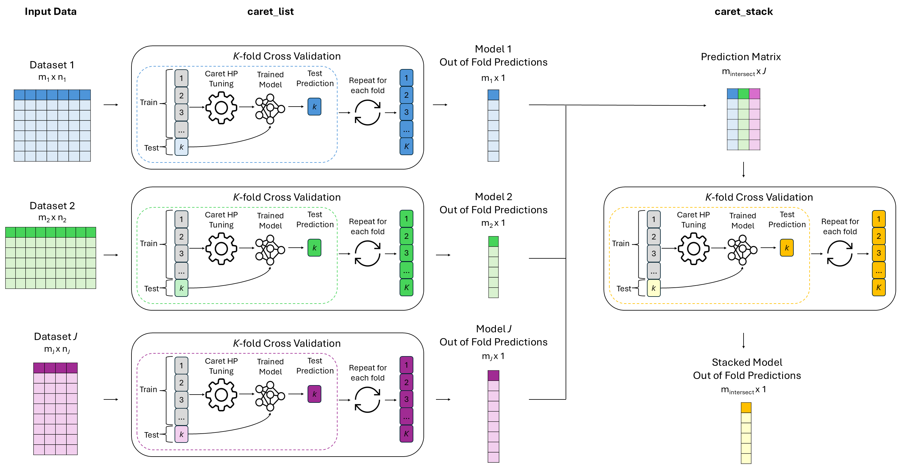

caretMultimodal extends the caret framework to support late fusion workflows in R, enabling users to train models independently across multiple data modalities and combine their predictions into a single meta-model. Designed for R developers, data scientists, and biomedical researchers, caretMultimodal makes late fusion ensemble modelling as accessible and flexible as single-dataset workflows in caret.
Example late fusion workflow using cross-validation

Key Features
- Includes all the functionality of
caret, giving users full control over sampling strategies, training methods, hyperparameter tuning, and more
- Default cross-validation structure with careful handling to prevent data leakage across modalities
- Late fusion ensembling using stacked generalization
- Parallelization for faster training across models and datasets
- Model trimming to reduce memory usage for large ensembles
- Built-in evaluation tools for performance assessment, ROC curves, and variable importance
- Detailed error messages to simplify debugging
Documentation
Full API documentation is available at compbio-lab.github.io/caretMultimodal
Installation
The package can be installed using devtools
devtools::install_github("CompBio-Lab/caretMultimodal")Acknowledgements
The project structure is inspired by Zach Mayer’s caretEnsemble package, which is used for stacking multiple models on a single dataset.